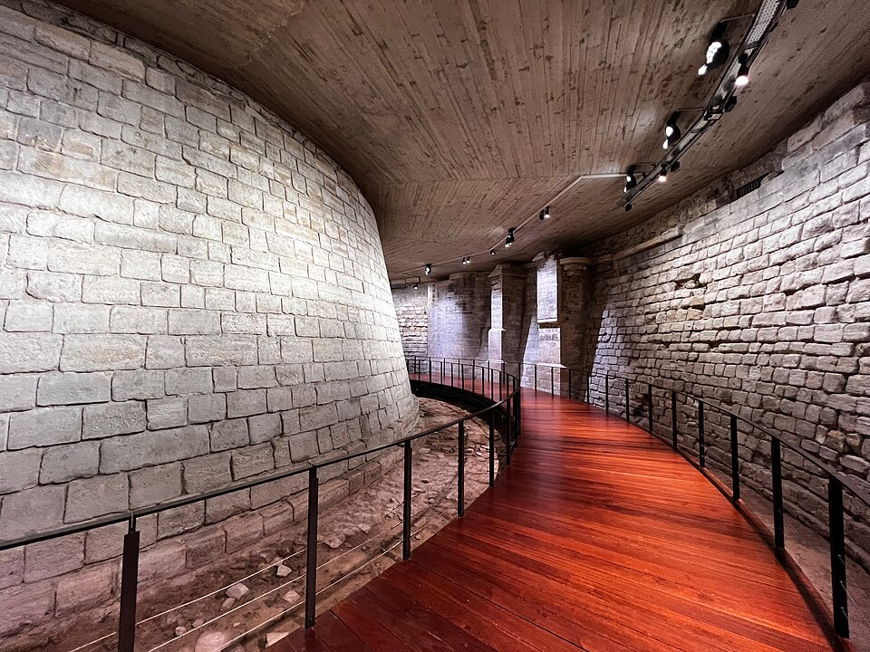

1190 — A Fortress on the Seine
Built by King Philip II as he prepared to leave on the Third Crusade, the original Louvre was a fortress with a circular keep (the Grosse Tour) at the western edge of Paris. Its moat walls survive in the basement — you can walk alongside them today, in the cool stone corridors beneath the museum.